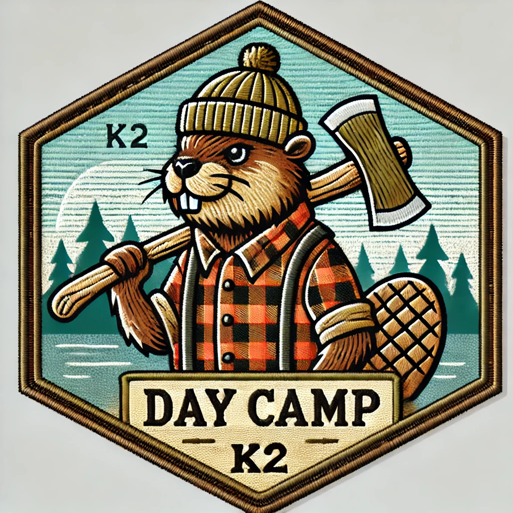
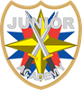
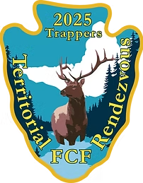

Events Coming Up

ADVENTURE CAMP 2025
Embark on an unforgettable journey at the 2025 Adventure Camp! Where Faith, Fun and the great outdoors come together for an action-packed weekend of growth and discovery! Set against the backdrop of breathtaking wilderness, campers will tackle thrilling challenges, learn essential survival skills, and build lifelong friendships. With dynamic Bible studies, hands-on activities, campfire nights, and tons of fun, this is more than just your average campout --- it's an experience that inspires young men and boys to grow stronger in their walk with God, and rise as leaders in their communities!
Don't miss out on this ultimate summer adventure!
When: May 2nd, 3rd and 4th
Where: 1501 Wautoma Rd, Sunnyside, WA 98944
Contact us through the contact page for more details.

2025 JUNIOR LEADERSHIP DEVELOPMENT CAMPS
We will be hosting a Junior Training Camp (JTC) , Advanced Junior Training Camp (AJTC) and Shooting Sports Action Camp (SSAC).
JTC and AJTC are required to earn your saber and are for all young men 7-12th grades.
SSAC is for high school young men as well as leaders/commanders, pastors and even dads who want to attend the camp with their son(s).
Don't miss out on this time to grow as a leader!
When: June 26-29
Where: Camp Roganunda, Naches, WA
Contact us through the contact page for more details.

2025 FCF RENDEZVOUS
This event is for current members of FCF, the Frontiersman Camping Fellowship, as well as those seeking to join FCF.
Don't miss out on this ultimate summer adventure!
When: June 18-22
Where: The Dalles, Oregon
For more information and registration visit this link.